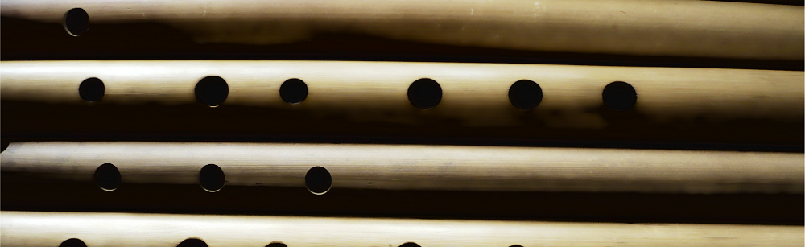
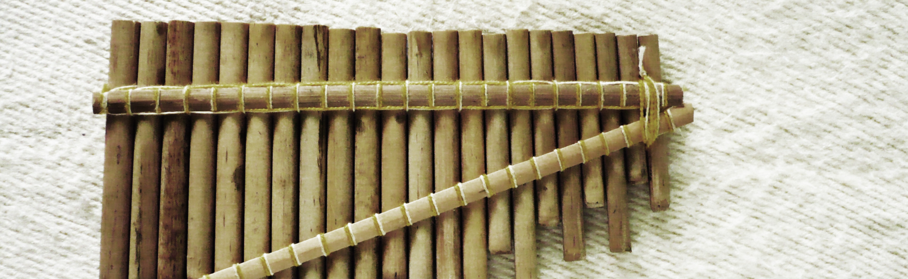
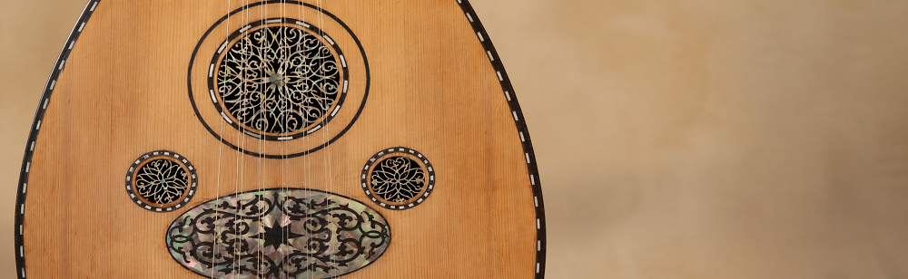

Activities
Home > Activities
Instrumentarium brings research on musical instruments into public, educational, and collaborative settings. Lectures, demonstrations, workshops, courses, exhibitions, and documentation projects explore instruments as sound-producing objects and as material documents shaped by making, performance, territory, circulation, and memory.
The activities below are adaptable proposals, not fixed scripts. Their subjects, depth, duration, and combination of research, sound, objects, and practical work depend on the audience, the host institution, and the materials or questions at hand. For hosting and practical arrangements, see Invite Instrumentarium below.
Activity formats
Eight formats provide different ways of approaching the research. They may stand alone or be combined into a larger programme.
- Keynote lectures. Research-based talks for academic, professional, and general audiences, connecting organology with history, archives, classification, and cultural memory. Usually 45–90 minutes.
- Lecture-demonstrations. Spoken interpretation, images, and live instruments bring construction, acoustic behaviour, musical practice, and documentary evidence into the same session. Usually 60–90 minutes, primarily in person.
- Workshops and training. Practical sessions in instrument description, classification, provenance, metadata, field documentation, and the interpretation of musical collections. From half a day to two days.
- Academic seminars. Focused examination of research questions, historical sources, methods, and case studies with students, scholars, or professional teams. One session or a short series.
- Short courses. Multi-session programmes that allow sustained work with organology, source criticism, instruments, sound archives, and documentation methods.
- Advisory and consulting. Collaborative assessment of instrument collections, documentation workflows, descriptive systems, research materials, or interpretive needs. Scope agreed with the host.
- Field documentation residencies. Collaborative work with instrument makers, musicians, collections, archives, or local sound practices, with questions, permissions, and outputs agreed in advance.
- Exhibitions and installations. Temporary displays, research tables, and installations combining instruments with drawings, photographs, raw materials, tools, reconstructed objects, recordings, and archival traces.

Programmes
The following four programmes are developed in the Instrumentarium Host Kit as starting points for collaboration. They can be adapted to different collections, publics, and institutional settings, or combined with other questions arising from the project's research.
Musical Instruments as Documents
Keynote lecture or academic seminar. What can an instrument preserve beyond its sound? Materials, construction, repair, wear, names, use, custody, and historical circulation all provide evidence. This programme draws on documented cases to examine what instruments reveal about technical and ecological knowledge, and what conventional cataloguing and classification leave unrecorded.
From Object to Sound
Lecture-demonstration or educational programme. Live instruments and prepared models reveal how length, openings, edges, reeds, membranes, and resonating bodies influence sound. Images and documentary sources connect these acoustic principles with making traditions, playing techniques, and local environments. The emphasis is on making the relationship between material decisions and sound audible and visible.
Documenting Sound Artifacts
Workshop or training session. What belongs in an instrument record? Participants examine provenance, variant names, materials, construction, makers, performers, recordings, images, uncertainty, access conditions, and territorial context. The programme addresses the limitations of descriptions that identify an instrument's type but preserve little about its history or use.
Field Documentation Residency
Collaborative research and documentation. A residency begins with a specific question about instruments, making, performance, local sound practices, or collections. Depending on context, it may involve interviews, object study, recordings, archival research, collection review, workshops, and public activities. Methods, permissions, attribution, access, and deliverables are agreed in advance, with attention to the interests of participating communities and institutions.
Other possible themes
Programmes can also focus on particular instruments or families, including Andean panpipes, quenas, traditional clarinets, musical bows, trumpets, and chordophones; on classification and instrument nomenclature; on sound, ecology, and material culture; on the formation of musical canons through recording; or on the interpretation of museum and archival collections. These are research directions from which specific activities can be designed, not separate lists of interchangeable programme titles.
Research behind the programmes
These proposals are based on published organological studies, documentary and bibliographic research, and practical investigation of musical instruments. Representative works include Las trompetas largas de los Andes peruanos (InstrumentUM, 2023), El erquencho y otros clarinetes idioglóticos sin orificios «tipo meridional» (Cuadernos de investigación musical, 2023), and Flautilla, «quena», camacheña… (Revista de Folklore, 2022). A more recent article, When Music Leaves No Objects: Yámana Vocal Practice and the Archival Bias Toward Instruments (Resonance, 2026), examines what instrument-centred archives fail to register.
Research materials can be explored through the articles and compilations, publications, and instrument index. The developing MusIC project extends this work into the classification and documentation of instruments. Together, these sources provide a research foundation for lectures, demonstrations, workshops, and collaborative documentation.

Invite Instrumentarium
Universities, research groups, music departments, conservatories, museums, libraries, archives, cultural centres, galleries, schools, festivals, community organisations, and heritage initiatives may propose an activity or develop a programme together with Instrumentarium. The starting point might be a collection, a local instrument, an educational need, a research question, or an idea not yet fully formed.
Activities may take place in person, online, or in hybrid form, depending on their requirements. A single session, a multi-session programme, an exhibition, or an extended residency can be discussed in relation to the intended audience, location, duration, available instruments and materials, institutional resources, accessibility, permissions, and desired outcomes. The Host Kit provides more detailed examples and can be shared with prospective hosts.
Programmes can be developed in Spanish, English, Portuguese, or Italian. For proposals, availability, and practical arrangements, write to edgardocivallero (@) gmail (.) com or consult the contact page. There is no requirement to choose a finished programme before starting a conversation.